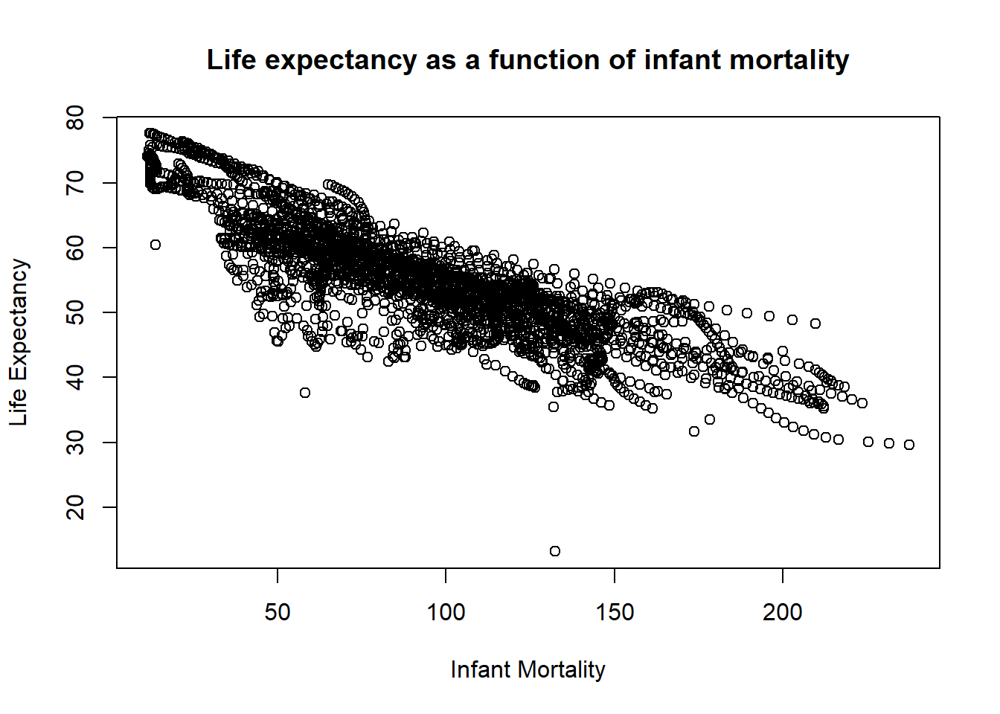
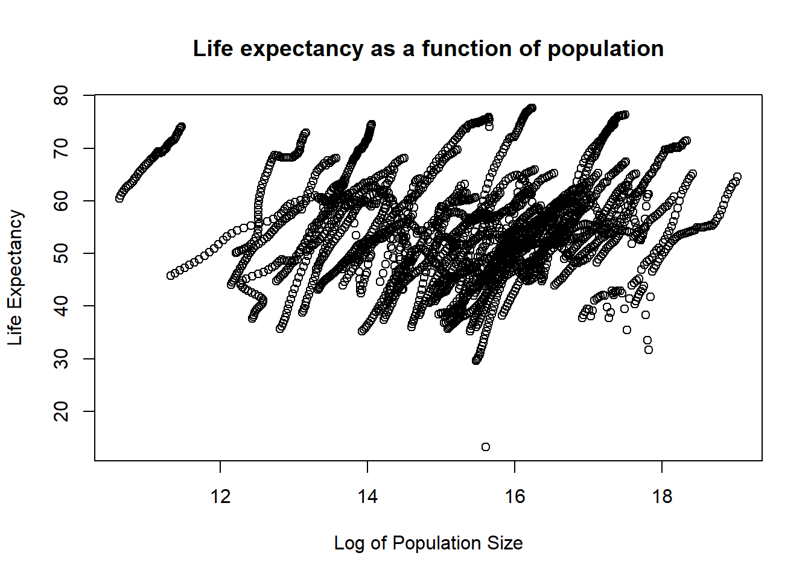
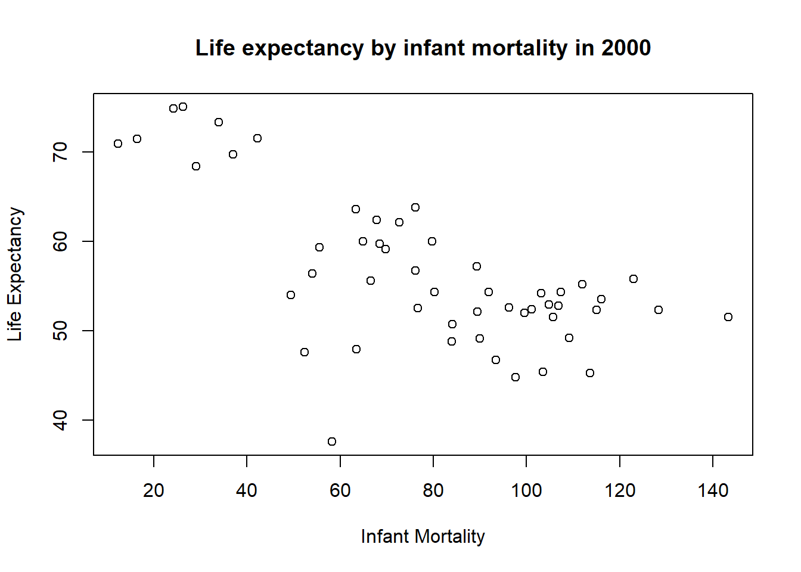
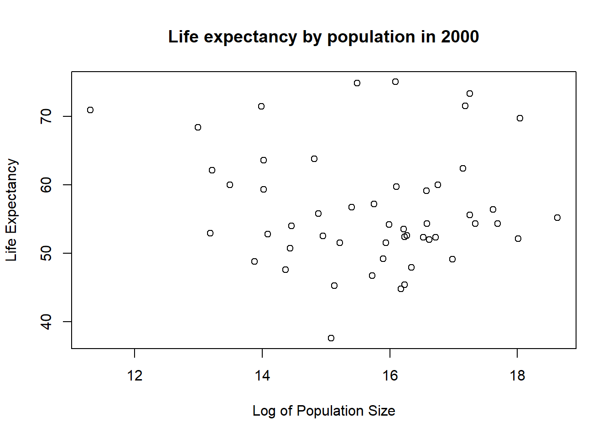

##
## Attaching package: 'dslabs'## The following object is masked from 'package:modelr':
##
## heightsThe gapminder dataset includes health and income outcomes for 185 countries from 1960 to 2016. Has two associated vectors, oecd and opec.
## 'data.frame': 10545 obs. of 9 variables:
## $ country : Factor w/ 185 levels "Albania","Algeria",..: 1 2 3 4 5 6 7 8 9 10 ...
## $ year : int 1960 1960 1960 1960 1960 1960 1960 1960 1960 1960 ...
## $ infant_mortality: num 115.4 148.2 208 NA 59.9 ...
## $ life_expectancy : num 62.9 47.5 36 63 65.4 ...
## $ fertility : num 6.19 7.65 7.32 4.43 3.11 4.55 4.82 3.45 2.7 5.57 ...
## $ population : num 1636054 11124892 5270844 54681 20619075 ...
## $ gdp : num NA 1.38e+10 NA NA 1.08e+11 ...
## $ continent : Factor w/ 5 levels "Africa","Americas",..: 4 1 1 2 2 3 2 5 4 3 ...
## $ region : Factor w/ 22 levels "Australia and New Zealand",..: 19 11 10 2 15 21 2 1 22 21 ...## country year infant_mortality
## Albania : 57 Min. :1960 Min. : 1.50
## Algeria : 57 1st Qu.:1974 1st Qu.: 16.00
## Angola : 57 Median :1988 Median : 41.50
## Antigua and Barbuda: 57 Mean :1988 Mean : 55.31
## Argentina : 57 3rd Qu.:2002 3rd Qu.: 85.10
## Armenia : 57 Max. :2016 Max. :276.90
## (Other) :10203 NA's :1453
## life_expectancy fertility population gdp
## Min. :13.20 Min. :0.840 Min. :3.124e+04 Min. :4.040e+07
## 1st Qu.:57.50 1st Qu.:2.200 1st Qu.:1.333e+06 1st Qu.:1.846e+09
## Median :67.54 Median :3.750 Median :5.009e+06 Median :7.794e+09
## Mean :64.81 Mean :4.084 Mean :2.701e+07 Mean :1.480e+11
## 3rd Qu.:73.00 3rd Qu.:6.000 3rd Qu.:1.523e+07 3rd Qu.:5.540e+10
## Max. :83.90 Max. :9.220 Max. :1.376e+09 Max. :1.174e+13
## NA's :187 NA's :185 NA's :2972
## continent region
## Africa :2907 Western Asia :1026
## Americas:2052 Eastern Africa : 912
## Asia :2679 Western Africa : 912
## Europe :2223 Caribbean : 741
## Oceania : 684 South America : 684
## Southern Europe: 684
## (Other) :5586 #(if numeric-mean/median/etc; if character gives the number contained per level)
class(gapminder) # checks what type of object gapminder is -- "data.frame"## [1] "data.frame"Creating a dataframe with only countries in the African continent
africadata <- subset(gapminder, continent == "Africa") # subsetting all data associated with the contient "Africa"
str(africadata) # checking the data included in this df, 2907 obs of 9 variables## 'data.frame': 2907 obs. of 9 variables:
## $ country : Factor w/ 185 levels "Albania","Algeria",..: 2 3 18 22 26 27 29 31 32 33 ...
## $ year : int 1960 1960 1960 1960 1960 1960 1960 1960 1960 1960 ...
## $ infant_mortality: num 148 208 187 116 161 ...
## $ life_expectancy : num 47.5 36 38.3 50.3 35.2 ...
## $ fertility : num 7.65 7.32 6.28 6.62 6.29 6.95 5.65 6.89 5.84 6.25 ...
## $ population : num 11124892 5270844 2431620 524029 4829291 ...
## $ gdp : num 1.38e+10 NA 6.22e+08 1.24e+08 5.97e+08 ...
## $ continent : Factor w/ 5 levels "Africa","Americas",..: 1 1 1 1 1 1 1 1 1 1 ...
## $ region : Factor w/ 22 levels "Australia and New Zealand",..: 11 10 20 17 20 5 10 20 10 10 ...## country year infant_mortality life_expectancy
## Algeria : 57 Min. :1960 Min. : 11.40 Min. :13.20
## Angola : 57 1st Qu.:1974 1st Qu.: 62.20 1st Qu.:48.23
## Benin : 57 Median :1988 Median : 93.40 Median :53.98
## Botswana : 57 Mean :1988 Mean : 95.12 Mean :54.38
## Burkina Faso: 57 3rd Qu.:2002 3rd Qu.:124.70 3rd Qu.:60.10
## Burundi : 57 Max. :2016 Max. :237.40 Max. :77.60
## (Other) :2565 NA's :226
## fertility population gdp continent
## Min. :1.500 Min. : 41538 Min. :4.659e+07 Africa :2907
## 1st Qu.:5.160 1st Qu.: 1605232 1st Qu.:8.373e+08 Americas: 0
## Median :6.160 Median : 5570982 Median :2.448e+09 Asia : 0
## Mean :5.851 Mean : 12235961 Mean :9.346e+09 Europe : 0
## 3rd Qu.:6.860 3rd Qu.: 13888152 3rd Qu.:6.552e+09 Oceania : 0
## Max. :8.450 Max. :182201962 Max. :1.935e+11
## NA's :51 NA's :51 NA's :637
## region
## Eastern Africa :912
## Western Africa :912
## Middle Africa :456
## Northern Africa :342
## Southern Africa :285
## Australia and New Zealand: 0
## (Other) : 0Breaking down the African dataset into smaller subsets
#creating a new data frame, and naming the columns
lifecycle <- data.frame(infant_mortality = africadata$infant_mortality, life_expectancy = africadata$life_expectancy)
#creating a new data frame, and naming the columns
poplife <- data.frame(population = africadata$population, life_expectancy = africadata$life_expectancy)
str(lifecycle) #2907 obs of 2 variables## 'data.frame': 2907 obs. of 2 variables:
## $ infant_mortality: num 148 208 187 116 161 ...
## $ life_expectancy : num 47.5 36 38.3 50.3 35.2 ...## 'data.frame': 2907 obs. of 2 variables:
## $ population : num 11124892 5270844 2431620 524029 4829291 ...
## $ life_expectancy: num 47.5 36 38.3 50.3 35.2 ...## infant_mortality life_expectancy
## Min. : 11.40 Min. :13.20
## 1st Qu.: 62.20 1st Qu.:48.23
## Median : 93.40 Median :53.98
## Mean : 95.12 Mean :54.38
## 3rd Qu.:124.70 3rd Qu.:60.10
## Max. :237.40 Max. :77.60
## NA's :226## population life_expectancy
## Min. : 41538 Min. :13.20
## 1st Qu.: 1605232 1st Qu.:48.23
## Median : 5570982 Median :53.98
## Mean : 12235961 Mean :54.38
## 3rd Qu.: 13888152 3rd Qu.:60.10
## Max. :182201962 Max. :77.60
## NA's :51Plot life expectancy as a function of infant mortality
#plot(x value, y value, x-axis label, y-axis label, main title)
plot(lifecycle$infant_mortality, lifecycle$life_expectancy, xlab="Infant Mortality",
ylab="Life Expectancy", main="Life expectancy as a function of infant mortality") A negative correlation between infant mortality and life expectancy
Plot life expectancy as a function of populaiton size
#plot(x value, y value, x-axis label, y-axis label, main title)
plot(log(poplife$population), poplife$life_expectancy, xlab="Log of Population Size",
ylab="Life Expectancy", main="Life expectancy as a function of population") This plot shows a slight positive correlation overall for this data set. However, there are streaks of data which are likely all from the same country just with the growing population size overtime.
Finding what years have NAs for infant mortality
yrNA<-data.frame() #create an empty data frame that can be added on to later
#create a for loop to go through all years in the data set
#count the number of TRUE meaning there is an NA present in which year
#add year and number of NAs present in the empty data frame
for(i in 1960:2016){
x<-sum(is.na(africadata$infant_mortality[which(africadata$year==i)]))
yrNA <- rbind(yrNA,c(i,x))
}Creating a new data frame for only the year 2000 in Africa
africa2000 <- subset(africadata, year == "2000") #subsetting the data to only yr2000
summary(africa2000) #summary statistics of all variables## country year infant_mortality life_expectancy
## Algeria : 1 Min. :2000 Min. : 12.30 Min. :37.60
## Angola : 1 1st Qu.:2000 1st Qu.: 60.80 1st Qu.:51.75
## Benin : 1 Median :2000 Median : 80.30 Median :54.30
## Botswana : 1 Mean :2000 Mean : 78.93 Mean :56.36
## Burkina Faso: 1 3rd Qu.:2000 3rd Qu.:103.30 3rd Qu.:60.00
## Burundi : 1 Max. :2000 Max. :143.30 Max. :75.00
## (Other) :45
## fertility population gdp continent
## Min. :1.990 Min. : 81154 Min. :2.019e+08 Africa :51
## 1st Qu.:4.150 1st Qu.: 2304687 1st Qu.:1.274e+09 Americas: 0
## Median :5.550 Median : 8799165 Median :3.238e+09 Asia : 0
## Mean :5.156 Mean : 15659800 Mean :1.155e+10 Europe : 0
## 3rd Qu.:5.960 3rd Qu.: 17391242 3rd Qu.:8.654e+09 Oceania : 0
## Max. :7.730 Max. :122876723 Max. :1.329e+11
##
## region
## Eastern Africa :16
## Western Africa :16
## Middle Africa : 8
## Northern Africa : 6
## Southern Africa : 5
## Australia and New Zealand: 0
## (Other) : 0## 'data.frame': 51 obs. of 9 variables:
## $ country : Factor w/ 185 levels "Albania","Algeria",..: 2 3 18 22 26 27 29 31 32 33 ...
## $ year : int 2000 2000 2000 2000 2000 2000 2000 2000 2000 2000 ...
## $ infant_mortality: num 33.9 128.3 89.3 52.4 96.2 ...
## $ life_expectancy : num 73.3 52.3 57.2 47.6 52.6 46.7 54.3 68.4 45.3 51.5 ...
## $ fertility : num 2.51 6.84 5.98 3.41 6.59 7.06 5.62 3.7 5.45 7.35 ...
## $ population : num 31183658 15058638 6949366 1736579 11607944 ...
## $ gdp : num 5.48e+10 9.13e+09 2.25e+09 5.63e+09 2.61e+09 ...
## $ continent : Factor w/ 5 levels "Africa","Americas",..: 1 1 1 1 1 1 1 1 1 1 ...
## $ region : Factor w/ 22 levels "Australia and New Zealand",..: 11 10 20 17 20 5 10 20 10 10 ...Recreating previous plots with only data from the year 2000 in Africa
#plot(x value, y value, x-axis label, y-axis label, main title)
plot(africa2000$infant_mortality, africa2000$life_expectancy, xlab="Infant Mortality",
ylab="Life Expectancy", main="Life expectancy by infant mortality in 2000")
plot(log(africa2000$population), africa2000$life_expectancy,
xlab="Log of Population Size", ylab="Life Expectancy",
main="Life expectancy by population in 2000")
#fitting a linear model to infant mortality and life expectancy
#lm(response~terms) - where terms means predictors
fit1 <- lm(africa2000$life_expectancy ~ africa2000$infant_mortality)
summary(fit1)##
## Call:
## lm(formula = africa2000$life_expectancy ~ africa2000$infant_mortality)
##
## Residuals:
## Min 1Q Median 3Q Max
## -22.6651 -3.7087 0.9914 4.0408 8.6817
##
## Coefficients:
## Estimate Std. Error t value Pr(>|t|)
## (Intercept) 71.29331 2.42611 29.386 < 2e-16 ***
## africa2000$infant_mortality -0.18916 0.02869 -6.594 2.83e-08 ***
## ---
## Signif. codes: 0 '***' 0.001 '**' 0.01 '*' 0.05 '.' 0.1 ' ' 1
##
## Residual standard error: 6.221 on 49 degrees of freedom
## Multiple R-squared: 0.4701, Adjusted R-squared: 0.4593
## F-statistic: 43.48 on 1 and 49 DF, p-value: 2.826e-08#fitting a linear model to population and life expectancy
fit2 <- lm(africa2000$life_expectancy ~ africa2000$population)
summary(fit2)##
## Call:
## lm(formula = africa2000$life_expectancy ~ africa2000$population)
##
## Residuals:
## Min 1Q Median 3Q Max
## -18.429 -4.602 -2.568 3.800 18.802
##
## Coefficients:
## Estimate Std. Error t value Pr(>|t|)
## (Intercept) 5.593e+01 1.468e+00 38.097 <2e-16 ***
## africa2000$population 2.756e-08 5.459e-08 0.505 0.616
## ---
## Signif. codes: 0 '***' 0.001 '**' 0.01 '*' 0.05 '.' 0.1 ' ' 1
##
## Residual standard error: 8.524 on 49 degrees of freedom
## Multiple R-squared: 0.005176, Adjusted R-squared: -0.01513
## F-statistic: 0.2549 on 1 and 49 DF, p-value: 0.6159Predicting life expectancy based on infant mortality has a significant positive correlation. While using population size to predict life expectancy is not significantly correlated.